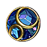

The Most Friendly Starting Skill Gem
TextPasive Tree Step By Step
-
Passive tree level 1 - 25
Click here
-
Passive tree level 26 - 50
Click here
-
Passive tree level 51 - 75
Click here
-
Passive tree level 76 - 100
Click here
Gem Setups
Main Skill - Caustic Arrow
Your bread and butter. First 3 support gems have no real downsides and should always be included in the build. Conc
Effect and Damage on Full Life have downsides, which one you prefer is up to you (i recommend the second one). Empower
has no downside but requires level 3 or 4 to be worth using. Costs a lot of money or time.
-
Caustic Arrow
Caustic arrow scales good with the gem level. More gem levels - more damage. You can acquaire gem levels on your neck (+2 in total) and On your bow (+3 in total).
-
Void Manipulation
This one gives us huge flat chaos damage boost.
-
Swift Affliction
Swift Affliction have downside & upside. Upside: Chaos damage increasing. Downside: reduced skill duration.
-
Vicious Projectiles
HUGE chaos overtime bonus for projectile skills, BIS.
-
Concentraded effect
Reducing AoE, But increasing Area Damage
-
Damage on full life
Very risky choice dont recommend it. Full life uptime in poe is not 100%
-
Empower
The name of this gem saying it all. Absolute damage boost, but very expensive and unreal in SSF
-

Eficaccy
In my opinion most stable gem for 6 link in your gear, provides nice damage boost and skill duration boost
Gameplay Showcase
All videos have timestamps and character info in the description. Each video contains conqueror fight and map clear of his citadel. Low budget is easily achievable in SSF, with exception of Empower 4. However extra damage it provides can easily be gained from other sources. Harvest gear is for showcase purposes mostly, getting similar gear now is realistically impossible.
3.15 Version
3.12 Version
Low Budget
Harvest Geared